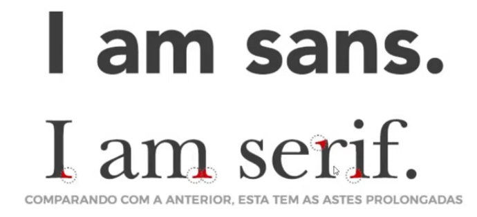
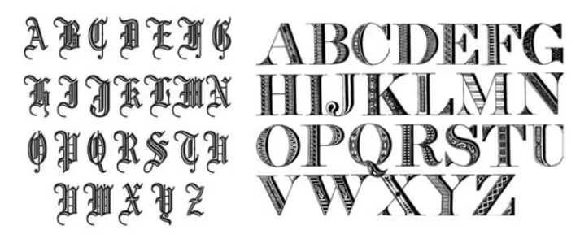
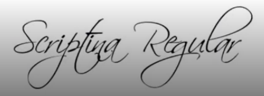
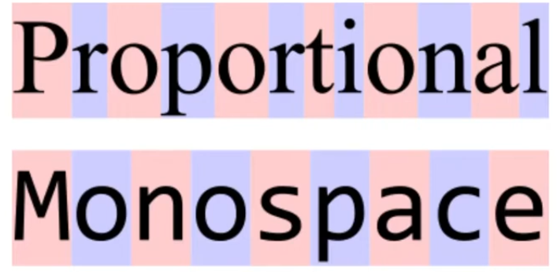

Fontes serifadas
São compostas por pequenos traços e prolongamentos que ficam no fim de cada letra, conhecidos com serifas.
Exemplo: Times New Roman e Georgia
Fontes sem serifa
As fontes sem serifa são conhecidas como sans-serif, que são fontes que não possuem os traços e prolongamentos no fim das letras
Exemplo: Roboto e Open Sans
Fontes enfeitadas
As fontes da familia Display são consideradas tipografias comemorativas, ou enfeitadas.
Exemplo: Fascinate Inline e Protest Guerrilla
Fontes manuscritas
As fontes que se assemelham com a escritas à mão, conhecidas como manuscritas ou cursivas.
Exemplo: Playwrite Cuba e Caveat
Fontes monoespaçadas
As fontes mono-espaçadas são definidas por toda família de fontes que todos os caracteres ocupam a mesma largura.
Exemplo: Playwrite Cuba e Caveat
Google Fonts
O Google Fonts é um catálogo de fontes e ícones de código aberto, mantido pelo Google para uso gratuito nos projetos.
Link: Google Fonts